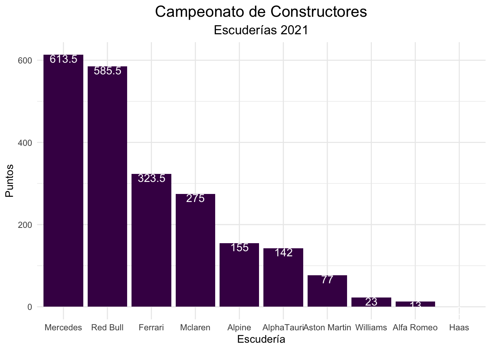

Introducción
El siguiente trabajo se va a estructurar de la siguiente forma:
En primer lugar, vamos a realizar una contextualización del campeonato y de sus distintos elementos, mediante diferentes gráficos que hemos realizado utilizando el programa Rstudio. Queriendo enfocar principalmente vuestra atención en las distintas audiencias y su evolución en los últimos años, comparaciones con otras competiciones deportivas de distinta modalidad, las escuderías y pilotos que conforman y han conformado las parrillas a lo largo de la historia…
En segundo lugar, procederemos a explicar la evolución de la Fórmula 1 a lo largo de su historia a través de gráficos donde compararemos victorias por pilotos y explicaremos la relevancia que estos han tenido para la competición a lo largo de los años, así como los pit-stops más rápidos hasta la actualidad.
En tercer lugar, hemos querido dedicar la última parte a explicar la temporada 2021 y la fuerte competición entre los dos pilotos más destacados.
Datos del trabajo
El dataset que hemos utilizado para realizar este trabajo está hecho a partir de kaggle y más concretamente aquí, junto a la base de datos Statista para obtener los datos sobre las audiencias y el Prize Pool de las competiciones deportivas
Código R del trabajo
Código
#A continuación vamos a poner todas las librerías que hemos necesitado
library(tidyverse)
library(readxl)
library(gapminder)
library(gganimate)
library(stats)
library(plotly)
library(ggplot2)
library(treemap)
library(treemapify)
library(magick)
#Mediante este código cargamos todos los dataset
tiempos <- rio::import(file = "./datos/lap_times.csv")
pilotos <- rio::import(file = "./datos/drivers.csv")
resultados <- rio::import(file = "./datos/results.csv")
carreras <- rio::import(file = "./datos/races.csv")
escuderias <- rio::import(file = "./datos/constructors.csv")
escuderias2 <- rio::import(file = "./datos/constructor_standings.csv")
resultado_escuderias <- rio::import(file = "./datos/constructor_results.csv")
circuitos <- rio::import(file = "./datos/circuits.csv")
pit_stops <- read_csv("datos/pit_stops.csv")
Prizepool_competiciones <- read_excel("datos/valor_eventos.xlsx")
Prizepool_competiciones <- na.omit(Prizepool_competiciones)
Valor_marcas <- read_excel("datos/valor_marcas.xlsx")
audiencias <- read_excel("datos/audiencias.xlsx")
pitstops <- rio::import(file= "./datos/pit_stops.csv")Contextualización del campeonato
El Campeonato Mundial de la Fórmula 1, organizado por la FIA, es uno de los deportes con mayor auge en los últimos 2 años, reuniendo a miles de aficionados cada fin de semana, y siendo el número 1 respecto a los deportes de motor, imponiéndose a otras modalidades como el Rally o el Campeonato Mundial de Moto GP.
Tras una extensa temporada, entre los años 2004 y 2010 con una clara tendencia alcista en cuanto a espectadores, observamos una reducción año tras año de la cantidad total de espectadores debido al dominio de Mercedes y a la privatización de los derechos televisivos de la competición, lo que causó que la gran parte de la población no pudiese acceder o no estuviera dispuesta a pagar el precio que se estableció cada año para ver la competición cada fin de semana. Pero en los últimos años ha adquirido una mayor relevancia dicho campeonato, creciendo el número de espectadores, especialmente en España gracias al fenómeno denominado como “El Plan”, relacionado con el piloto Fernando Alonso.
Código
g <- crosstalk::SharedData$new(audiencias)
grafico_audiencias <- ggplot(g, aes(x=year, y=numero_espectadores, frame = year)) +
geom_point() +
labs(title = "Evolución del número de espectadores por año",
subtitle = "Desde el 2004 hasta el 2020",
x = "Años",
y = "Número total de espectadores") +
scale_x_log10() +scale_y_continuous(labels=function(n){format(n, scientific = FALSE)})
grafico_audiencias <- ggplotly(grafico_audiencias) %>% highlight("plotly_hover")
grafico_audienciasHecho que podemos comprobar por otra vía, al comparar el “Prize pool” entre las diferentes competiciones deportivas del mundo superando a competiciones como el campeonato mundial de la FIFA, el campeonato mundial de Póker o incluso la UEFA Europa League. Pero siendo claramente inferior la F1, junto al resto de competiciones deportivas existentes en la actualidad, a la UEFA Champions League y es que el fútbol es el deporte líder en audiencia a nivel mundial sin ningún claro competidor, llegando el “prize pool” de dicha competición a la cifra de 1300 millones de dólares, ante los casi 800 millones de dólares de la F1.
Código
Prizepool_competiciones <- Prizepool_competiciones %>% mutate(Competiciones = forcats::as_factor(Competiciones))
Prizepool_competiciones <- Prizepool_competiciones %>% mutate(Competiciones = forcats::fct_rev(Competiciones))
grafico_eventos <- ggplot(Prizepool_competiciones) +
aes(x = Competiciones, weight = Dinero) +
geom_bar(fill = "#440154") +
labs(
x = "Competiciones",
y = "Dinero (expresado en millones de dólares)",
title = "Prize pool ",
subtitle = "De las principales competiciones deportivas"
) +
coord_flip() +
theme_classic()
grafico_eventosAl tratarse de un deporte de automovilismo, el elemento principal es el coche y por ello hemos querido destacar las principales partes del vehículo que dan vida al campeonato. Incluyendo aquí al motor, el corazón del coche y el elemento principal por el cual ha evolucionado tanto la Fórmula 1; el alerón trasero, que junto al resto de elementos de la carrocería, son los que le proporcionan la carga aerodinámica que permiten alcanzar velocidades superiores a 300 kilómetros por hora; el halo, elemento incluido en los últimos años y que ha salvado numerosas vidas de los pilotos en los accidentes al proteger sus cabezas por todas las direcciones; el morro, que junto a los difusores y alerones son los que generan el llamado “efecto suelo”; destacando los neumáticos (slicks) cuyo cambio en la carrera genera el denominado “pit-stop”; y por último el volante, que junto a los pedales es la fuente de la unión entre el piloto y la máquina.
Código
faps <- image_read("./imagenes/faps.jpg") %>% image_scale(.,"700")
halo <- image_read("./imagenes/halo.jpg") %>% image_scale(.,"700")
morro <- image_read("./imagenes/morro.png") %>% image_scale(.,"700")
motor <- image_read("./imagenes/motor.jpg") %>% image_scale(.,"700")
volante <- image_read("./imagenes/volante.jpg") %>% image_scale(.,"700")
partes_del_coche <- c(faps,halo,morro,motor,volante)
image_animate(image_scale(partes_del_coche), fps = 0.5)En la F1 compiten actualmente 10 equipos con 2 pilotos por equipo, lo que conforma una parrilla de 20 pilotos en cada carrera en la que disputan tanto el título de pilotos como el de constructores (equipos). Los títulos se disputan en un calendario de 22 carreras (Temporada 2021) alrededor del mundo, no obstante el número de pilotos, equipos y carreras ha variado a lo largo de la historia de este campeonato.
Actualmente los equipos inscritos y pilotos (por orden de campeonato de constructores de 2022) són:
1º- Red Bull Racing con Max Verstappen y Sérgio Pérez
2º- Ferrari con Charles Leclerc y Carlos Sainz
3º- Mercedes-AMG con George Russell y Lewis Hamilton
4º- Alpine Renault con Fernando Alonso y Esteban Ocon
5º- Mclaren Mercedes con Lando Norris y Daniel Ricciardo
6º- Alfa Romeo Ferrari con Valtteri Bottas y Guanyu Zhou
7º- Aston Martin Mercedes con Sebastian Vettle y Lance Stroll
8º- Haas Ferrari con Kevin Magnussen y Mick Schumacher
9º- Alpha Tauri RBPT con Pierre Gasly y Yuki Tsunoda
10º- Williams Mercedes con Alex Albon y Nicholas Latifi
Dentro de los anteriores equipos inscritos y de acuerdo con el gráfico, destaca una enorme divergencia en cuanto al valor económico de los distintos equipos competidores que en ocasiones los pilotos han demostrado con su habilidad la baja correlación entre el valor económico del equipo y el número de victorias. Aún así, la divergencia entre marcas como Ferrari o Alfa Romeo, que es de más de 1200 millones dólares, es fundamental en cuanto a la inversión en tecnología para mejorar campeonato tras campeonato. Ya que tenemos que recordar que la tecnología y la I+D es fundamental en un deporte de automovilismo como éste, existiendo una dura reglamentación para solucionar las divergencias.
Código
grafico_valor_escuderías <- ggplot(Valor_marcas, aes(area = Dinero, fill = Marcas,
label = Marcas)) +
geom_treemap() +
geom_treemap_text(colour = "black",
place = "centre",
size = 15) +
scale_fill_brewer() +
labs(title = "Valor económico de las marcas",
subtitle = "Expresado en millones de dólares",
)
grafico_valor_escuderíasPor otro lado, las citas del último campeonato fueron:
GP Bahrein
GP Arabia Saudi
GP Australia
GP Emilia Romagna
GP Miami
GP España
GP Mónaco
GP Azerbaijan
GP Canada
GP Gran Bretaña
Gp Austria
GP Francia
GP Hungria
GP Belgica
GP Holanda
GP Italia
GP Singapur
GP Japon
GP EE.UU.
GP Mexico
GP Brasil
GP Abu Dhabi
Es interesante comentar también la procedencia de los diferentes equipos, que se adjudica según el establecimiento de la fábrica, como podemos observar la gran mayoría están instaladas en Gran Bretaña en el llamado “Motorsports Valley”, sería el caso de los equipos actuales como Aston Martin (Silverstone), Mercedes (Brackley), Red Bull ( Milton Keynes), Mclaren (Woking) ,Williams (Grove) incluso Alpine (Enstone). Y generando, junto a Estados Unidos e Italia en menor medida, una enorme concentración tecnológica en cuanto a este sector. Dentro del ámbito económico podríamos afirmar que nos encontramos ante un Clúster tecnológico.
Código
df_escuderias_agrupadas <- escuderias %>% group_by(nationality) %>% summarise(NN=n()) %>%
slice_max(NN, n=4)
grafico_escuderias_por_paises <- ggplot(df_escuderias_agrupadas) +
aes(x = NN, color = nationality,weight = NN) +
geom_bar(fill = "#440154") +
scale_color_hue(direction = 1) +
labs(title = "Escuderías agrupadas por nacionalidades en la historia",
subtitle = "Escogidas las 4 con mayor cantidad",
x = "Número total de nacionalidades",
y = "Número total de nacionalidades") +
theme_minimal() + coord_polar()
grafico_escuderias_por_paises
Historia y curiosidades en la Fórmula 1
Pilotos más exitosos en la historia
Desde 1950 hasta 2022 han competido 856 pilotos en 214 equipos distintos en la categoría. De estos pilotos tan solo 113 se han convertido en ganadores de un Gran Premio.
Nos planteamos en este apartado cuáles han sido “los mejores” de estos 113 afortunados de modo que nos podamos hacer una idea de los dominadores de la categoría.
Antes de hablar de los resultados cabe destacar la gran diferencia entre el calendario de carreras actual del de hace años atrás y cómo esto puede afectar en los resultados pues el calendario actual está formado por 22 carreras, calendario que ha seguido una tendencia ascendente en sus citas pues en 2010 consistía de 19 carreras, 17 en el año 2000, 14 en 1980, etc. Mientras que para esta próxima temporada se pretendían hacer 25. Esto cabe destacar debido a que aquellos pilotos con el coche ganador de las respectivas temporadas pudieron acumular un mayor o menor número de victorias según el vigente calendario.
Código
mayores_victorias <- full_join(pilotos, resultados, c("driverId" = "driverId")) %>%
full_join(., carreras, c("raceId" = "raceId")) %>%
select(driverId, driverRef, position, year, date) %>%
filter(position == 1) %>%
group_by(driverRef) %>%
mutate(victoria_num = sum( NN = n())) %>%
filter(victoria_num >= 25) %>%
arrange(victoria_num) %>%
mutate( suma_vic = cumsum(position))%>%
arrange(desc(victoria_num))%>%
distinct(victoria_num)
mayores_victorias
#> # A tibble: 11 × 2
#> # Groups: driverRef [11]
#> driverRef victoria_num
#> <chr> <int>
#> 1 hamilton 103
#> 2 michael_schumacher 91
#> 3 vettel 53
#> 4 prost 51
#> 5 senna 41
#> 6 max_verstappen 35
#> 7 alonso 32
#> 8 mansell 31
#> 9 stewart 27
#> 10 lauda 25
#> 11 clark 25
G_victorias <- ggplot(mayores_victorias) +
aes(x = reorder(driverRef, desc(victoria_num)), y = victoria_num) +
geom_col(fill = "#622072") +
labs(
x = "Pilotos",
y = "Nº Victorias",
title = "Pilotos con más victorias"
) +
coord_flip() +
ggthemes::theme_par()+
geom_text(aes(label=victoria_num), vjust=0.25,hjust=0.99, color="white",
position = position_dodge(0.1), size=5.0
)
G_victorias
#Pilotos con al menos 1 victoria
unavictoria <- full_join(pilotos, resultados, c("driverId" = "driverId")) %>%
full_join(., carreras, c("raceId" = "raceId")) %>%
select(driverId, driverRef, position, year, date) %>%
filter(position == 1) %>%
distinct(driverId)
unavictoria
#> driverId
#> 1 1
#> 2 3
#> 3 4
#> 4 5
#> 5 8
#> 6 9
#> 7 13
#> 8 14
#> 9 15
#> 10 17
#> 11 18
#> 12 20
#> 13 21
#> 14 22
#> 15 23
#> 16 30
#> 17 31
#> 18 35
#> 19 44
#> 20 49
#> 21 55
#> 22 56
#> 23 57
#> 24 65
#> 25 71
#> 26 77
#> 27 95
#> 28 102
#> 29 105
#> 30 117
#> 31 119
#> 32 123
#> 33 137
#> 34 145
#> 35 163
#> 36 172
#> 37 173
#> 38 175
#> 39 177
#> 40 178
#> 41 182
#> 42 187
#> 43 199
#> 44 200
#> 45 202
#> 46 203
#> 47 207
#> 48 219
#> 49 221
#> 50 222
#> 51 223
#> 52 224
#> 53 230
#> 54 231
#> 55 235
#> 56 238
#> 57 250
#> 58 255
#> 59 289
#> 60 304
#> 61 306
#> 62 309
#> 63 320
#> 64 327
#> 65 328
#> 66 341
#> 67 345
#> 68 346
#> 69 347
#> 70 356
#> 71 358
#> 72 360
#> 73 364
#> 74 373
#> 75 375
#> 76 385
#> 77 386
#> 78 394
#> 79 403
#> 80 404
#> 81 427
#> 82 449
#> 83 842
#> 84 475
#> 85 476
#> 86 479
#> 87 498
#> 88 509
#> 89 525
#> 90 526
#> 91 559
#> 92 577
#> 93 578
#> 94 579
#> 95 581
#> 96 593
#> 97 611
#> 98 628
#> 99 641
#> 100 642
#> 101 647
#> 102 657
#> 103 766
#> 104 786
#> 105 813
#> 106 815
#> 107 817
#> 108 822
#> 109 830
#> 110 832
#> 111 839
#> 112 844
#> 113 847En los resultados obtenidos no encontramos sorpresas pues en primera posición encontramos a Lewis Hamilton (7 títulos) con 103 victorias, gran beneficiario de la “era híbrida” cosechando entre 2014 y 2021 6 títulos mundiales (Mercedes-AMG) de los 7 posibles más su título de 2008 con Mclaren-Mercedes, racha que sólo fue cortada por su compañero de equipo Rosberg en 2016 y en el final de la era híbrida por Verstappen.
En segunda posición y tras ser desbancado de la primera en la temporada 2021 nos encontramos a Michael Schumacher con 91 victorias (7 títulos), leyenda de la Fórmula 1 y mayor racha de títulos seguidos ganados. Ganó dos mundiales seguidos en 1994 y 1995 con el equipo Benetton tras lo que se marchó a Ferrari donde al fin en el año 2000 se alzó con el tercero, racha que continuó hasta 2004 con una aplastante superioridad con 5 títulos consecutivos. No sería otro que Fernando Alonso en 2005 con el Renault R25 quien logró parar la racha del “Káiser”.
En tercera posición nos encontramos a Sebastian Vettel con 53 victorias y 4 títulos con Red-Bull Racing. Vettel, primer gran éxito del programa de jóvenes pilotos de redbull logró sus 4 títulos de forma consecutiva entre 2010 y 2013 con un coche dominador gracias a los diseños de Adrian Newey. En especial recordamos estos años aquí dado que fue en 2010 y 2013, especialmente esta última y las desesperantes vueltas detrás de Petrov, mundiales que se esfumaron para Fernando en la última carrera compitiendo con Sebastian.
En cuarta posición encontramos a Alain Prost con 53 victorias y 4 títulos cosechados, gran rival de Ayrton Senna la cual llevaron hasta decidir los títulos del 89 y 90 con choques entre ellos en la última carrera , se alzó con los títulos de 1985,1986 (Marlboro McLaren), 1989(Mclaren-Honda) y 1993 (Williams-Renault).
En quinto lugar con 41 victorias encontramos a la leyenda brasileña del deporte Ayrton Senna con 3 títulos, 1988,1990 y 1991(Mclaren-Honda), alabado por todos por su forma de conducir y que le llevaría a fallecer en carrera el 1 de mayo de 1994 en el GP de Imola con 34 años al salirse de pista e impactar con un muro a 300 km/h, en una época donde la seguridad de los monoplazas era cuestionable.
En sexto lugar con 35 victorias encontramos a Max Verstappen, vigente campeón con 2 títulos consecutivos junto al equipo Red-Bull. Logró frenar la arrolladora racha del equipo Mercedes-AMG tras una emocionante temporada de 2021 que trataremos más tarde donde el título se decidió en la última vuelta.
El séptimo y último que destacaremos (por motivos nada personales) encontramos a Fernando Alonso(“el Nano”) con 32 victorias y 2 títulos (que bien podrían ser 3 de no ser por el fatal final de 2013) cosechados en 2005 y 2006 con el equipo Renault con el que logró frenar la racha de Ferrari y Schumacher. Como curiosidad vemos que hay visibles paralelismos con la historia actual de Verstappen, al proclamarse ambos campeones por primera vez con 24 años frente a un dominador 7 veces campeón del mundo de 36 años y una racha de 2 títulos seguidos.
Mejores Pit-Stops en la historia del campeonato
Los pit-stop consisten en las paradas que hacen en carrera los pilotos en “boxes” para cambiar ruedas o bien repostar(hasta 2009).
Para este Top-10 hemos extraído los datos del proceso completo de la parada, es decir, desde su entrada en el pit-lane hasta su salida y reincorporación a pista. Esto plantea unas diferencias entre circuitos y épocas debido a que no todos los pit-lane son igual de largos, ni su velocidad media es la misma (debido a que se baja si son más estrechos), así como que hasta la temporada 2009 estaban permitidos los repostajes por los que aumentan el tiempo total.
Para hacernos una idea de la magnitud de estas cifras, la media actual de las paradas en Boxes si todo sale bien es de unos 24 segundos.
Código
mejores_pitstops <- full_join(pilotos, pitstops, c("driverId" = "driverId")) %>%
full_join(., carreras, c("raceId" = "raceId")) %>%
select(driverRef, milliseconds) %>%
slice_min(milliseconds, n = 10)
mejores_pitstops
#> driverRef milliseconds
#> 1 maldonado 12897
#> 2 bruno_senna 12959
#> 3 hamilton 13173
#> 4 maldonado 13186
#> 5 michael_schumacher 13199
#> 6 perez 13201
#> 7 maldonado 13206
#> 8 massa 13259
#> 9 maldonado 13266
#> 10 vettel 13335
mejores_pitstops <- mejores_pitstops %>% mutate(milliseconds = forcats::as_factor(milliseconds))
mejores_pitstops <- mejores_pitstops %>% mutate(milliseconds = forcats::fct_rev(milliseconds))
G_pitstops <- ggplot(mejores_pitstops) +
aes(x = driverRef, y = milliseconds) +
geom_tile(size = 1.2) +
labs(
x = "-",
y = "milisegundos",
title = "10 Pit stops mas rápidos",
subtitle = "Desde entrada a Pit-line hasta salida"
) +
coord_flip() +
ggthemes::theme_base()
G_pitstopsRespecto de los datos evidencian lo comentado anteriormente y nos encontramos a los 2 mismos circuitos en las 6 primeras posiciones, siendo en primera posición a Pastor Maldonado con un tiempo de 12.897 segundos en el GP de Abu Dhabi 2011, siendo la segunda marca también en el mismo GP por parte de Bruno Senna con 12.959 segundos.
La tercera mejor marca la encontramos en el GP de Hungría de 2011 por parte de Lewis Hamilton con 13.173 segundos, en cuarta posición en el mismo GP encontramos de nuevo a Maldonado con 13.186 segundos
En quinta y sexta posición y últimas que destacaremos encontramos el GP de Hungría de 2012 a Michael Schumacher con 12.199 segundos y de nuevo el GP de Hungría 2011 a Sergio Pérez con 13.201 segundos.
Temporada 2021
La temporada 2021 fue una de las temporadas más emocionantes de los últimos tiempos gracias a que la lucha de los dos contendientes por el campeonato de pilotos ha sido intrigante hasta el final. Finalmente, Max Verstappen se llevó la corona de pilotos, mientras que Mercedes la de constructores.
Código
constructores <- data.frame(
"posicion" = c(1,2,3,4,5,6,7,8,9,10),
"escuderia" = c("Mercedes", "Red Bull", "Ferrari", "Mclaren", "Alpine", "AlphaTauri", "Aston Martin", "Williams", "Alfa Romeo", "Haas"),
"puntos" = c(613.5,585.5,323.5,275,155,142,77,23,13,0))
grafico_jose_constructores <- ggplot(constructores) +
aes(x = reorder(escuderia, desc(puntos)), y = puntos) +
geom_col(fill = "#440154") +
labs(x = "Escudería",
y = "Puntos", title = "Campeonato de Constructores", subtitle = "Escuderías 2021") +
theme_minimal() +
theme(plot.title = element_text(size = 16L, hjust = 0.5), plot.subtitle = element_text(size = 13L,
hjust = 0.5))+
geom_text(aes(label=puntos), vjust=0.99,hjust=0.49, color="white",
position = position_dodge(0.1), size=4.0
)
grafico_jose_constructores
El campeonato comenzó en Bahréin donde Max empezaba en la pole position con Lewis Hamilton a su lado. Hasta la vuelta 20, el holandés se mantuvo por delante de Hamilton, sin embargo, un error estratégico por parte de Red Bull hizo que el piloto británico lo aprovechara situándose en primera posición a 5 vueltas del final. Sin embargo, en la vuelta 53 de 56, Verstappen consigue rebasar al Mercedes pero tuvo que devolverle la posición por adelantarle por fuera de los límites de pista. De esta manera, Hamilton lograría vencer a Max en la primera carrera del campeonato.
Un punto de inflexión fue el Gran Premio de Mónaco el cual fue para Verstappen absolutamente perfecto. No cometió ni un solo error, se mantuvo en el liderato de inicio a fin mientras que su rival tan solo consiguió una séptima posición. El fin de semana siguiente, tuvo lugar uno de los grandes errores que le hicieron perder el campeonato de pilotos a Hamilton puesto que no supo aprovechar el abandono de Max a 5 vueltas para el final y cometió un error en la resalida tras la bandera roja. Esto provocó que en lugar de quedar primero y sacar 25 puntos de diferencia a su rival en el campeonato, finalizase la carrera en 15º posición obteniendo así 0 puntos.
En la décima carrera del campeonato, el Gran Premio de Gran Bretaña, tuvo lugar el momento más polémico del campeonato e incluso de los últimos tiempos. Verstappen llegaba al fin de semana con 32 puntos de ventaja sobre Lewis y buscaba continuar su racha de 3 triunfos consecutivos. Sin embargo, en la primera vuelta de la carrera, Max toma la delantera en la salida mientras Hamilton se queda en la segunda posición. Al llegar a Copse, una de las curvas más rápidas del campeonato, el de Mercedes expulsó fuera de la pista a Max al tratar de rebasarle provocando que el Red Bull saliera disparado hacia el muro de contención con un impacto de 51 Gs. De esta manera, con su rival fuera de combate, Lewis ganaría la carrera permitiéndole así recortarle 25 puntos al holandés.
Código
piloto <- c("Verstappen", "Hamilton", "Leclerc", "Sainz", "Bottas", "Alonso", "Pérez", "Ocon", "Norris", "Ricciardo", "Gasly", "Tsunoda", "Vettel", "Stroll", "Latifi", "Russell", "Mazepin", "Schumacher", "Giovinazzi", "Raikkonen")
puntos <- c(395.5,387.5, 159, 164.5,226,81,190,74,160,115,110,32,43,34,7,16,0,0,3,10)
data <- data.frame(puntos, piloto)
grafico_jose_pilotos <- ggplot(data) +
aes(x = reorder(piloto, desc(puntos)), y = puntos) +
geom_col(fill = "#440154") +
labs(x = "Pilotos", y = "Puntos",
title = "Campeonato de Pilotos") +
theme_minimal() +
theme(plot.title = element_text(size = 16L,
face = "bold", hjust = 0.5), axis.title.y = element_text(size = 12L, face = "bold"), axis.title.x = element_text(size = 12L,
face = "bold"))+
geom_text(aes(label=puntos), vjust=0.99,hjust=0.49, color="white",
position = position_dodge(0.1), size=4.0)
grafico_jose_pilotos